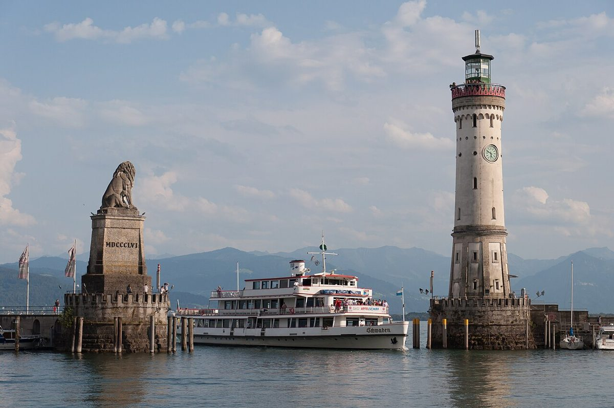

Descubre el Lago de Constanza: Un paraíso en el sur de Alemania

El Lago de Constanza, conocido en alemán como Bodensee, es uno de los destinos más fascinantes del sur de Alemania. Este impresionante lago, rodeado de paisajes naturales y ciudades llenas de historia, ofrece una experiencia única para todos los viajeros. Ya sea que busques relax, aventura o cultura, el Bodensee tiene algo para ti.
Cómo llegar al Lago de Constanza
El Lago de Constanza se encuentra en la región de Baden-Wurtemberg, en la frontera entre Alemania, Austria y Suiza. Para llegar, la opción más común es viajar en tren o coche desde ciudades como Múnich o Stuttgart. También hay aeropuertos cercanos, como el de Friedrichshafen, que conectan con varias ciudades europeas.
Mejor época para visitar
La mejor época para visitar el Bodensee es durante los meses de mayo a septiembre, cuando el clima es cálido y las actividades al aire libre son más accesibles. Sin embargo, el otoño también es una época encantadora, especialmente para disfrutar de los colores del paisaje.
Top 3 atracciones del Lago de Constanza
1. Isla de Mainau: Conocida como la 'Isla de las Flores', es un paraíso para los amantes de la naturaleza. Sus jardines exuberantes y su arquitectura histórica te dejarán sin palabras.
2. La ciudad de Konstanz: Situada en la orilla del lago, esta ciudad medieval combina historia, cultura y modernidad. No te pierdas su catedral y el puerto.
3. Castillo de Meersburg: Uno de los castillos más antiguos de Alemania, ubicado en la ciudad de Meersburg. Sus vistas al lago son espectaculares.
Experiencias únicas
Además de las principales atracciones, el Bodensee ofrece actividades como paseos en barco, senderismo alrededor del lago o ciclismo por sus rutas panorámicas. También puedes disfrutar de deportes acuáticos como el windsurf o el paddle surf.
Gastronomía local
La comida en el Lago de Constanza está influenciada por la cocina alemana y suiza. Prueba platos tradicionales como el pescado fresco del lago, especialmente la trucha o el lucio, acompañado de patatas y ensalada. También es famoso el Kässpätzle, una especie de pasta con queso fundido y cebolla caramelizada.
Consejos finales
Para disfrutar al máximo tu visita, asegúrate de llevar ropa cómoda y adecuada para el clima. Si decides alquilar una bicicleta, podrás explorar el lago de una manera única y económica. Y no olvides reservar tiempo para simplemente relajarte y disfrutar de las vistas.
El Lago de Constanza es un destino que combina naturaleza, cultura y gastronomía de una manera única. ¡Prepárate para vivir una experiencia inolvidable!
Haiktec
- Guía Práctica para Dueños de Perros Ocupados: 7 Estrategias Simples para un Cuidado Canino Sin Estrés
- Guía Práctica de Viaje para la Costa Alemana del Norte y Báltico: Itinerario y Gestor de Presupuesto
- Guía Esencial del Viajero: Descubre el Rin, Frankfurt y Heidelberg en 7 Pasos
Text mit KI erstellt und automatisch geprueft.